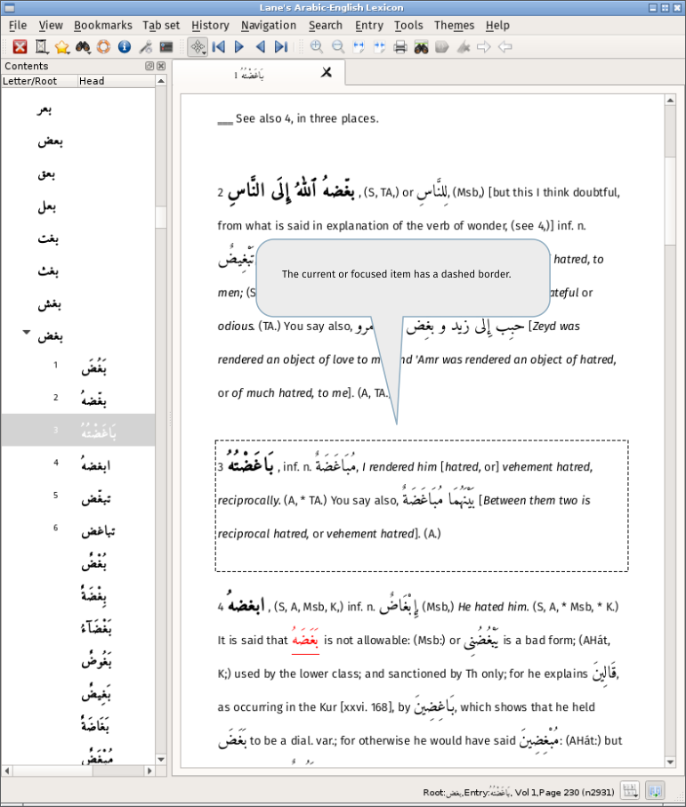
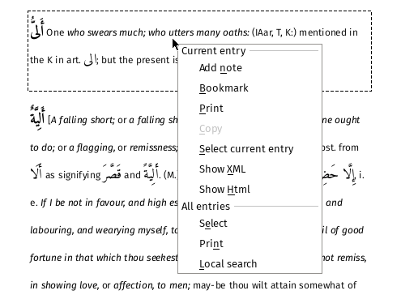
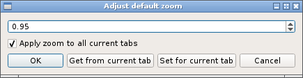

Viewing an entry
Double-click on a root to load the root and all of its derivatives into the current tab. Holding the shift or control key while clicking will load the root into a new tab.
To load a root using the keyboard, press return when one if its children is selected.
When a tab has loaded, the current item is shown with a dashed border, as below. This will be the root or one of its children, depending on which was double-clicked.

Use the scrollbar or the up/down keys to move around without changing the current item.
The default keys 'i' (move up) and 'k' (move down) change the view and the current item. Use the 'h' key to return to the original or 'home' item. The 'm' key changes the current item to the home item and can be used as a temporary bookark. (The keys are set in the entry options.)
When moving using the i/k keys, what happens at the first and last entries for the root depends on the setting for 'off page movement': when this is set (the default), movement continues onto the next/previous entry in the lexicon. To prevent this behaviour, turn this setting off in the entry options dialog.
Context menu
Right-clicking on an entry (or using the keyboard context menu key) will show the context menu:

There two sections: the upper actions apply to the current entry item, the lower to all items in the current tab.
Further information about notes can be found here and bookmarks here.
Text can be selected with the mouse or the context menu and copied to the clipboard. (The context menu item "Copy" will copy all the selected text, not just that of the currenty entry.)
Printing
An individual headword or the root and its its derivatives can be printed. Further information about how to setup printer is described here. This is a sample pdf.
Zooming
The current page may be zoomed using either the +/- keys or from the toolbar. Each tab has its own zoom level but a default zoom can be set for all tabs using Menu -> View -> Set default zoom or via the Options [dialog] (../options/options_entry.md).
The dialog can retrieve the zoom from the current tab allowing the user to adjust the zoom for the current page and then use the dialog to set that value as the default.

This work as follows:
| Control | Action |
|---|---|
| Ok | Set the default value for all new tabs from the spin box |
| Get from current tab | Populate the spin box with the zoom from the current tab |
| Set for current tab | Set the zoom for the current tab from the spin box |
| Apply zoom to all tabs | If Ok, is clicked, sets the zoom for all open tabs from the spin box |
Text width
If the user maximizes the application or otherwise increase its width, the text width will not automatically increase. This must be done manually using either the Menu -> Entry -> Widen or the toolbar buttons widen and narrow .
While the text in each tab can be adjusted independently, there is a default text width that can be set via the Options dialog. This setting only applies to new tabs.
To adjust the text width for all current tabs use Menu -> View -> Set text width which works in a similar to fashion to the zoom dialog described immediately above.